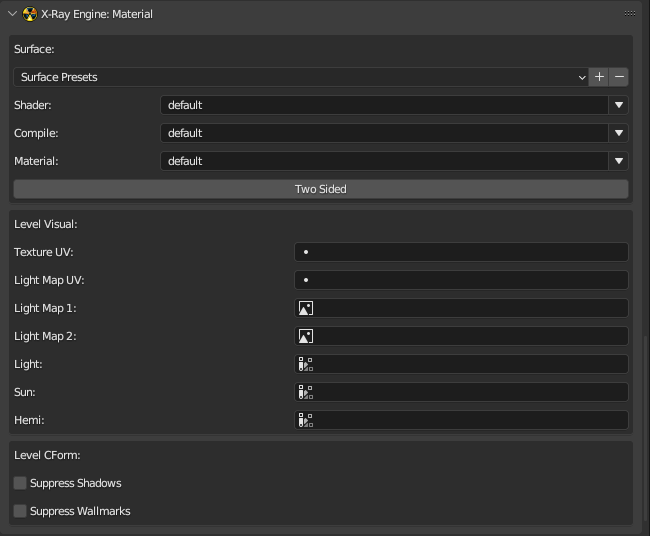

X-Ray Engine: Material

About
This panel stores material parameters (Surface in X-Ray SDK)
Location
Properties window, Material tab of the mesh object
General parameters
Surface Presets
Material presets. Shader, Compile, Material, Two Sided parameters are stored in presets. Presets work in the same way as standard presets
Shader
Engine Shader. If in the addon settings is specified shader.xr file in the Engine Shaders File parameter, then in the shader selection menu (located in the same line and has a down arrow icon) you can specify any shader from the file. It is also possible to specify an arbitrary value by typing it in the input field. If the object type is set to Dynamic or Progressive Dynamic, then when creating a material the shader value will be models\model. For all other types, the default value will be default
Compile
Compiler Shader. The compiler shader selection menu works similarly to the engine shader, but the shader_xrlc.xr file is specified in the Compile Shaders File parameter
Material
Game Material. The game material selection menu works similarly to the engine shader, but the gamemtl.xr file is specified in the Game Materials File parameter. If you move the mouse cursor over a material from the list, a tooltip will display a description of the material, which is specified in the gamemtl.xr file:
01
Two Sided
Double-sided surface. If this parameter is enabled for a material, then when exporting to *.ogf, twice as many polygons that use this material will be saved, because the polygons will be saved for both sides. When exporting to *.object the number of polygons will not change, because X-Ray SDK itself doubles the number of polygons when exporting to *.ogf.
Game Level Parameters
Parameters that are used only for visuals in game levels of level format
Texture UV
UV map that is used for the main texture
Light Map UV
UV map which is used for the lighting map
Light Map 1
Image that is used for the first lighting map
Light Map 2
Image that is used for the second lighting map
Light
A vertex color layer that is used for static lighting
Sun
A layer of vertex colors that is used for sun shadows
Hemi
A layer of vertex colors that is used for hemi lighting
Collision geometry parameters
Parameters that are only used for the level collision geometry, which is stored in the level.cform file
Suppress Shadows
Disable shadows
Suppress Wallmarks
Disable bullet marks and other wallmarks